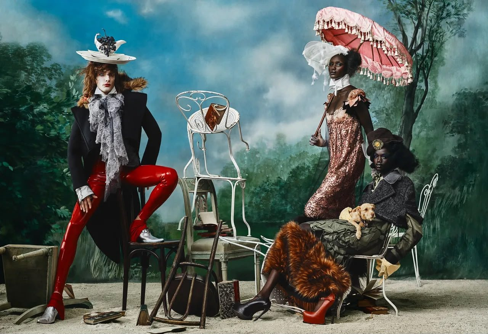
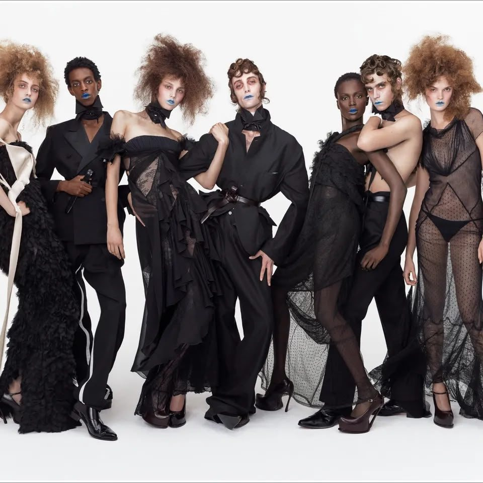
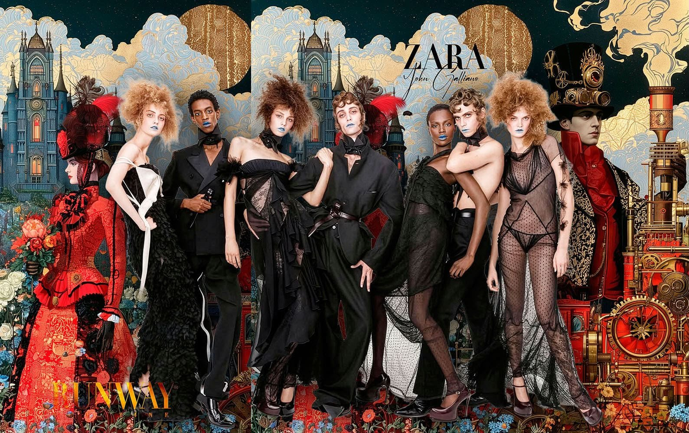
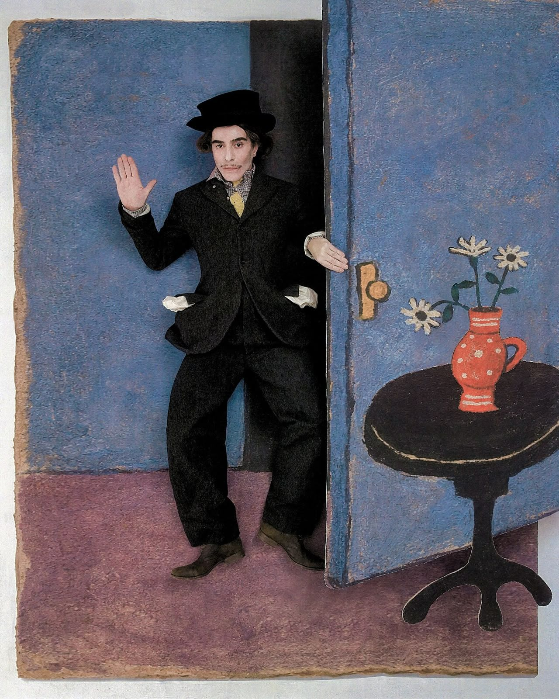
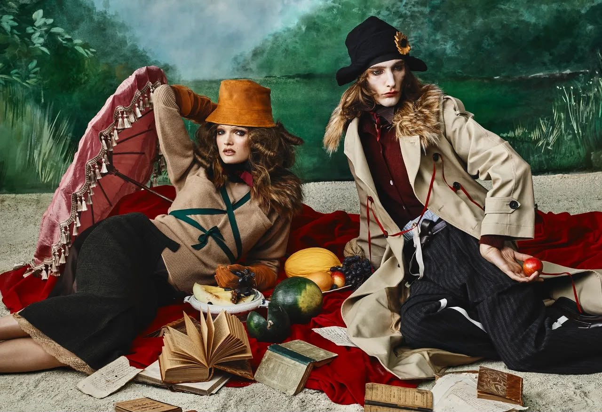
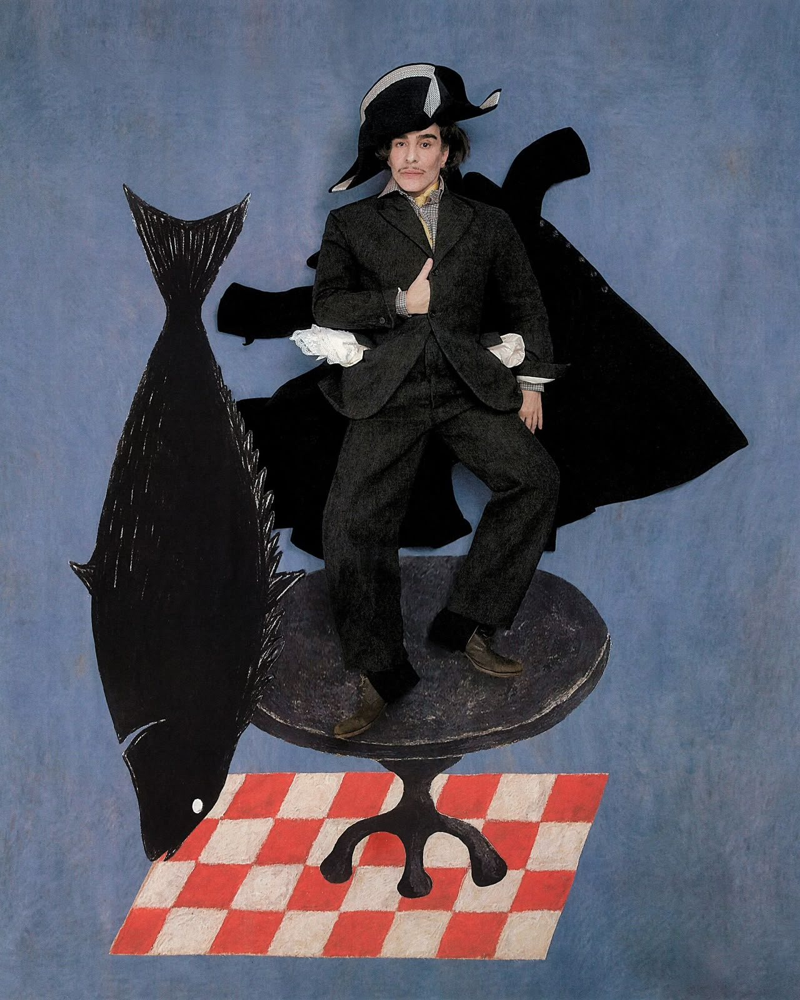
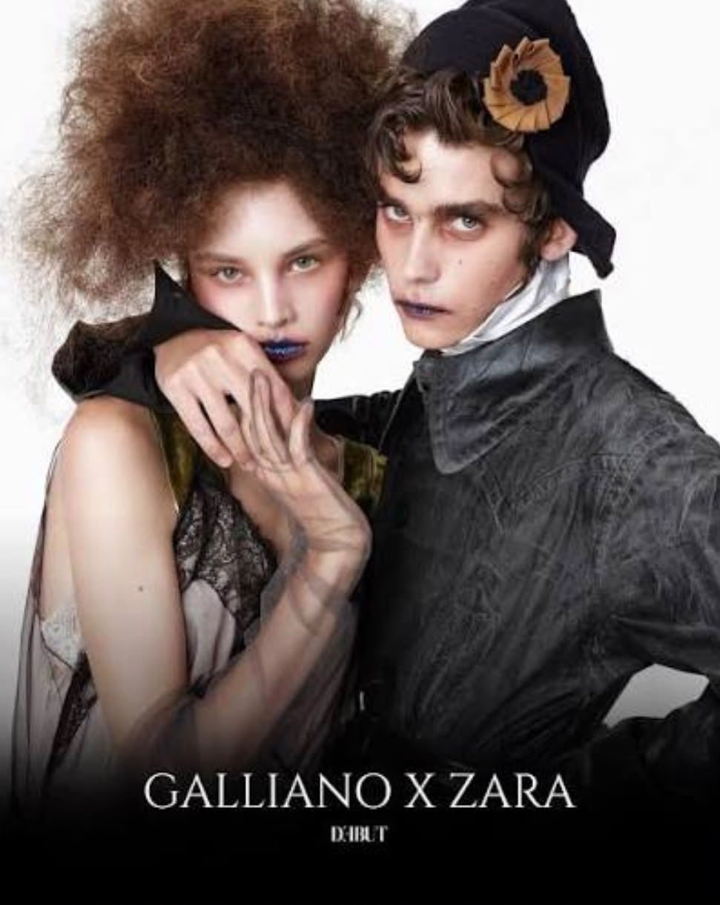

John Galliano is back in the earlier. The Spanish retailer Zara has signed the design legend to a two-year creative partnership which will see him “re-author” the brand’s archives, returning Galliano to fashion after an absence of two years following the fact of bravura and viral sensation that was his final Artisanal show for Maison Margiela in 2024.
While some celebrate his return as an opportunity to bring high-fashion creativity to a wider audience, others question whether the industry is too willing to overlook serious misconduct when the person responsible is exceptionally talented.


If a designer produces incredible work, should the fashion industry welcome them back even after a scandal like this?
Weigh it up. Your answer stays on your device.
From Couture Royalty to the High Street?
Before the controversy, Galliano was one of the most influential designers of his generation. After graduating from Central Saint Martins in London in 1984, he gained attention for his theatrical approach to fashion, historical references and dramatic silhouettes.
In 2011, Galliano’s career took a dramatic turn when videos emerged of him making antisemitic remarks in a Paris bar. The incident led to his dismissal from Dior, ending his 15-year association with the fashion house. He was later convicted by a French court of racist and antisemitic public insults. Although Galliano apologised and sought treatment for his struggles with addiction, the controversy left a lasting mark on his reputation.

- 1984
Central Saint Martins
Graduates in London and quickly gains attention for theatrical fashion, historical references and dramatic silhouettes.
- 2011
The fall from Dior
Videos emerge of antisemitic remarks in a Paris bar. He is dismissed from Dior after 15 years, and later convicted of racist and antisemitic public insults. He apologises and seeks treatment for addiction.
- 2024
Margiela, a last bow
After rebuilding at Maison Margiela, he leaves following a critically acclaimed final collection: the viral Artisanal show.
- Mar 2026
The plot twist
A two-year creative partnership with Zara is announced. The move is unexpected, to say the least.
- Oct 2026
Re{form}
His first Zara collection launches, exploring the reinterpretation and transformation of existing designs.
Wait. Zara?

Couture
- Craftsmanship
- Exclusivity
- Prestige
Decades creating fashion for the luxury world, where the experience is the point.
High Street
- Accessible
- Trend-driven
- Mass-market
A model built around reaching a much broader consumer base.
So, is this a creative experiment, a smart business move, or a little bit of both?
Experiment
Business
Both
What’s the Deal for Galliano?
Let’s be honest: Galliano doesn’t need Zara to prove that he can design. His career has already established his influence on fashion. What Zara offers is something different:
A designer whose creations once belonged largely to the world of luxury fashion can now introduce his ideas to a much wider audience.
Re{form}
His first Zara collection launched in October 2026, exploring the reinterpretation and transformation of existing designs.
But there’s another layer to the story. After years of rebuilding his professional reputation, Galliano is returning through one of the world’s most recognisable retail brands.
Does this mark a fresh creative chapter? Could it help strengthen his position in the industry?
Potentially.
But assuming that the partnership is simply a reputation-rebuilding exercise would be speculation. Whatever his personal motivation, one thing is clear: Galliano is stepping into a very different fashion arena, and the industry is watching.
The Zara Equation: Turning Controversy into Commercial Currency

Let’s look at this from Zara’s side. Bringing John Galliano on board is more than a designer collaboration; it’s a statement. Zara is already a global retail giant, but partnering with a designer associated with some of fashion’s most influential couture moments gives the brand a different kind of attention.
Galliano brings something money alone cannot easily manufacture: a distinctive creative identity, decades of fashion experience and a name that gets people talking. Suddenly, Zara is not just selling clothes inspired by the latest trends; it is placing itself in a conversation about design, luxury and creative authority.
And then there’s the publicity. Galliano’s return was always going to attract attention, but his controversial past makes the partnership even more closely scrutinised. For Zara, that attention could translate into curiosity about the collection and strengthen its fashion credentials.
However,
Publicity is a double-edged sword.
The same headlines that attract consumers…
…can also provoke criticism from those who question the decision to work with him.
The real question is whether Zara can make this collaboration about more than the designer’s name. Will Re{form} deliver a genuinely distinctive design vision, or will the association with Galliano become the collection’s biggest selling point?
The last word
Because in today’s fashion industry, the right name can sell a story before a single garment reaches the shop floor.